Scuff Plate: Service and Repair
Trim Removal/Installation - Door AreasSpecial Tools Required
KTC trim tool set SOJATP2014 *
* Available through the American Honda Tool and Equipment Program
Door Sill Area - 2-door
NOTE:
- Put on gloves to protect your hands.
- Take care not to bend or scratch the trim and panels.
- Use the appropriate tool from the KTC trim tool set to avoid damage when prying components.
1. Driver's side: Remove the front seat belt lower anchor.
2. Driver's side: Remove the footrest.
3. Driver's side: Remove the front side cap from the door sill trim, and remove the opener lock cylinder and screw.
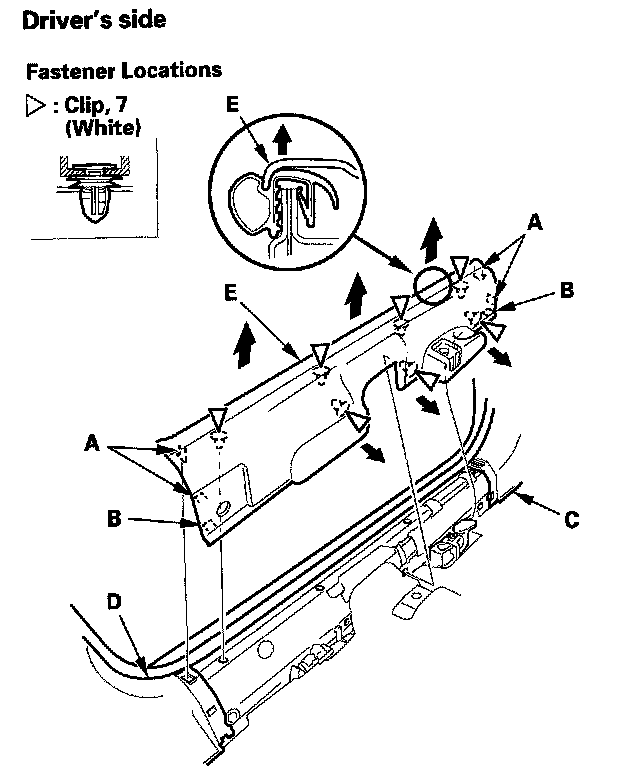
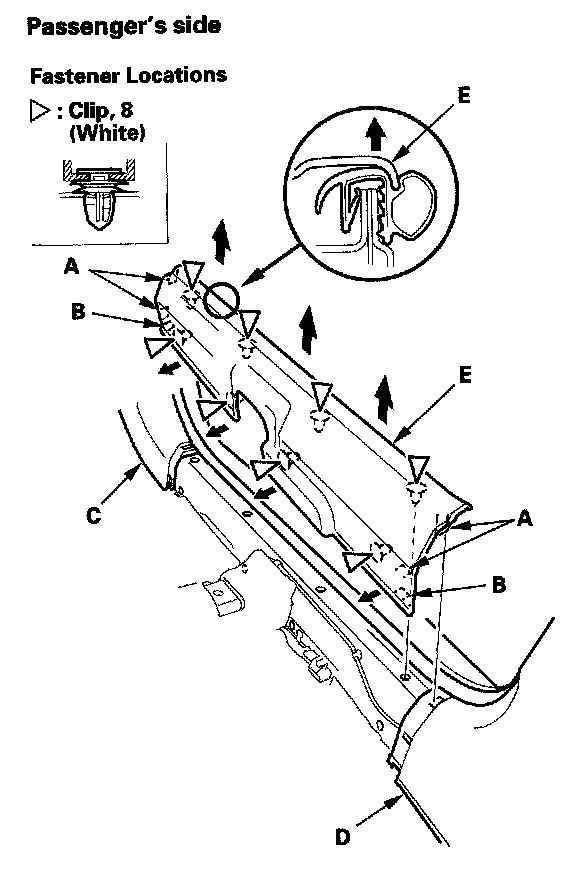
4. Detach the hooks (A) and tabs (B) from the kick panel (C) and rear side trim panel (D), and pull the door sill trim (E) up by hand to detach the clips, then remove it.
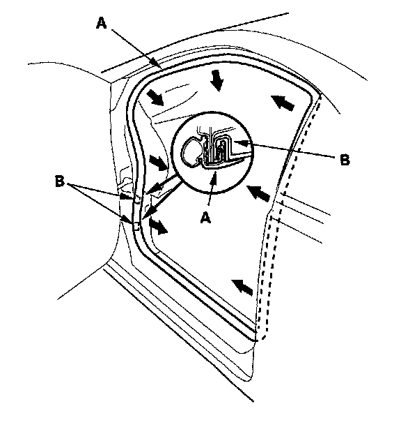
5. Pull out the door opening seal (A) from the trim hooks (B) and around the door opening flange, then remove the seal.
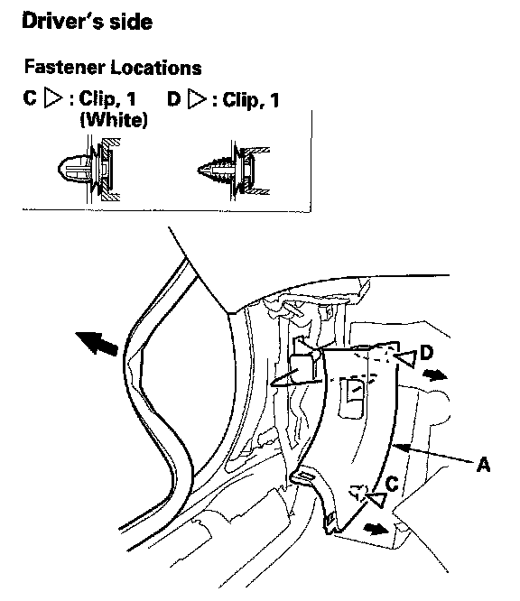
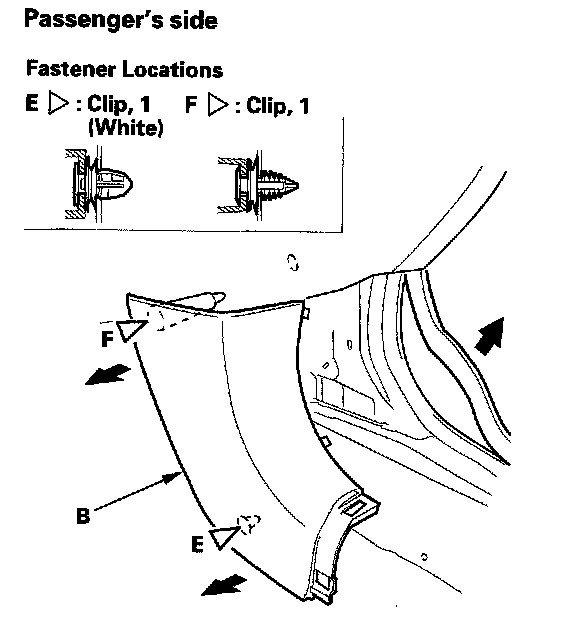
6. Pull the left kick panel (A) or the right kick panel (B) back by hand to detach the clips (C, D, E, F), then remove it.
7. Install the trim in the reverse order of removal, and note these items:
- Check if the clips are damaged or stress-whitened, and if necessary, replace them with new ones.
- Push the clips and hooks into place securely.
Special Tools Required
KTC trim tool set SOJATP2014 *
* Available through the American Honda Tool and Equipment Program
Front Door Sill Area - 4-door
NOTE:
- Put on gloves to protect your hands.
- Take care not to bend or scratch the trim and panels.
- Use the appropriate tool from the KTC trim tool set to avoid damage when prying components.
1. Driver's side: Remove the footrest.
2. Driver's side: Remove the front side cap from the front door sill trim, and remove the opener lock cylinder and screw.
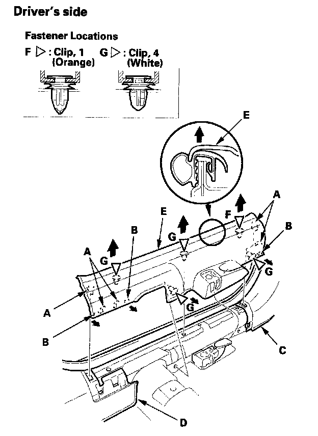
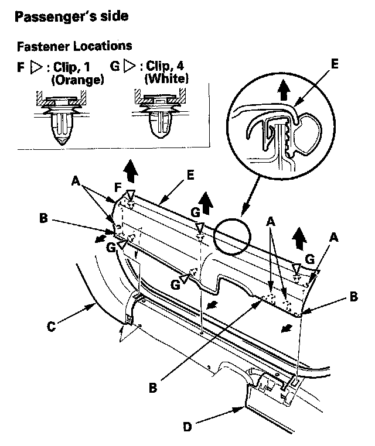
3. Detach the hooks (A) and tabs (B) from the kick panel (C) and B-pillar lower trim (D), and pull the front door sill trim (E) up by hand to detach the clips (F, G), then remove it.
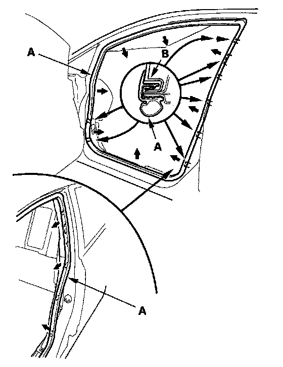
4. Pull out the front door opening seal (A) from the trim hooks (B) and around the front door opening flange, then remove the seal.
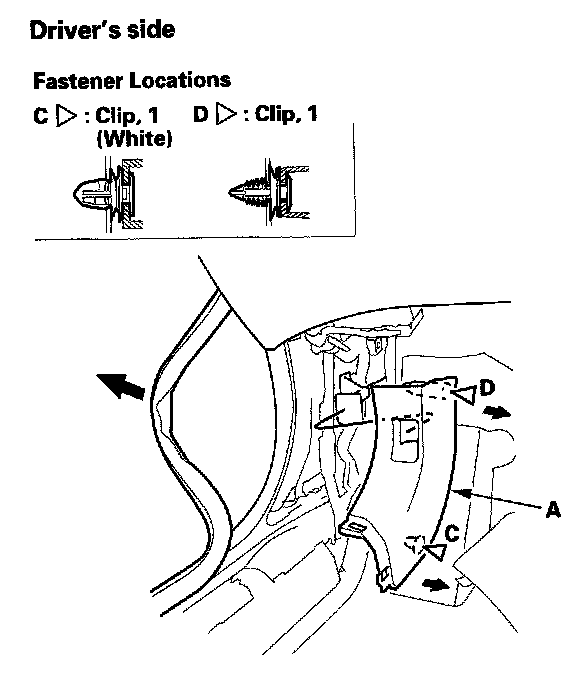
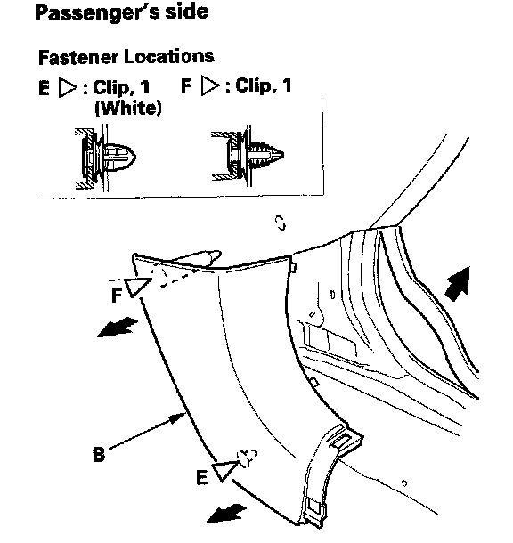
5. Pull the left kick panel (A) or the right kick panel (B) back by hand to detach the clips (C, D, E, F), then remove it.
6. Install the trim in the reverse order of removal, and note these items:
- Check if the clips are damaged or stress-whitened, and if necessary, replace them with new ones.
- Push the clips and hooks into place securely.
Special Tools Required
KTC trim tool set SOJATP2014 *
* Available through the American Honda Tool and Equipment Program
Rear Door Sill Area - 4-door
NOTE:
- Put on gloves to protect your hands.
- Take care not to bend or scratch the trim and panels.
- Use the appropriate tool from the KTC trim tool set to avoid damage when prying components.
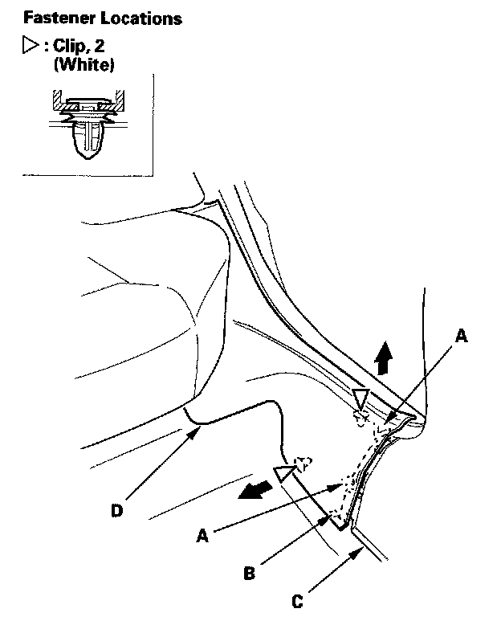
1. Detach the hook (A) and tab (B) from the B-pillar lower trim (C), and pull the rear door sill trim (D) up by hand to detach the clips, then remove it.
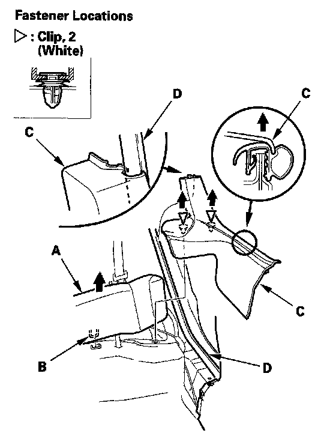
2. Pull the rear seat cushion (A) up to release the hook (B). While pulling the cushion up, detach the clips and remove the rear door sill trim (C) from the rear door opening seal (D).
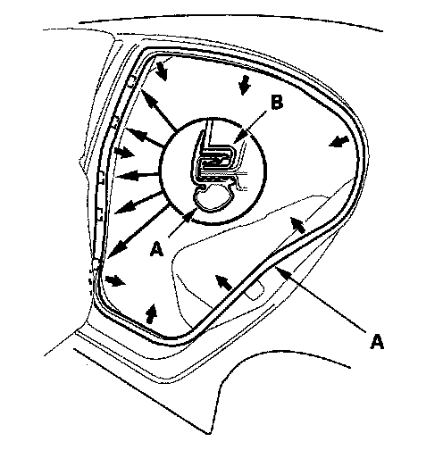
3. Pull out the rear door opening seal (A) from the trim hooks (B) and around the rear door opening flange, then remove the seal.
4. Install the trim in the reverse order of removal, and note these items:
- Check if the clips are damaged or stress-whitened, and if necessary, replace them with new ones.
- Push the clips and hooks into place securely.